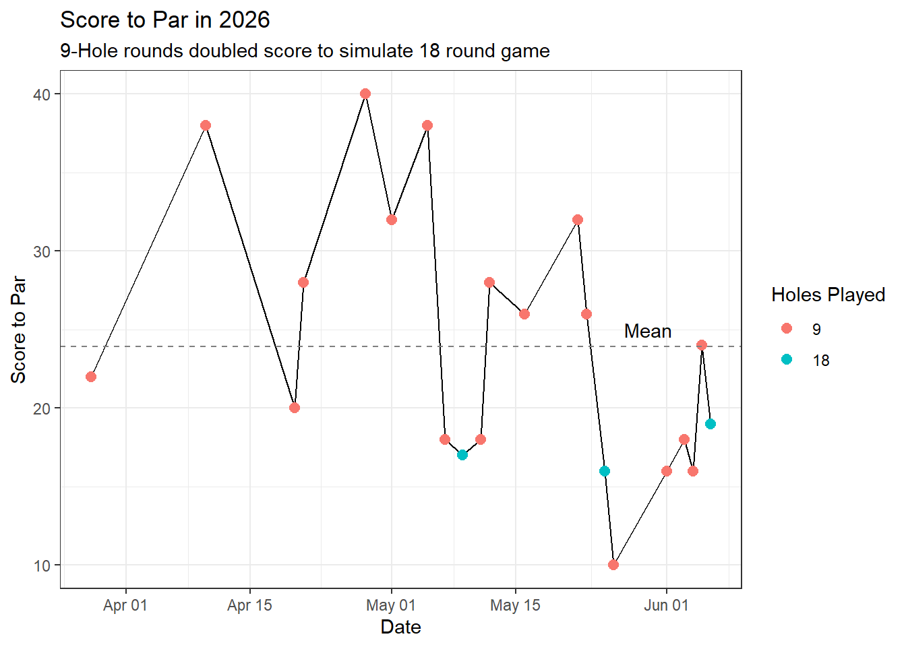
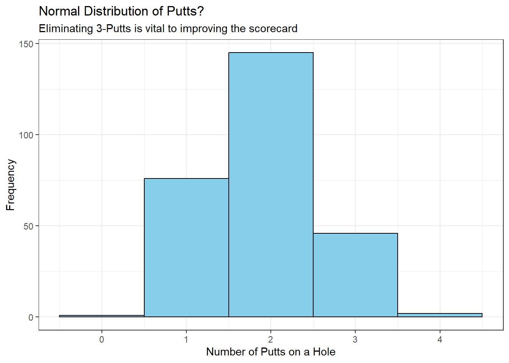
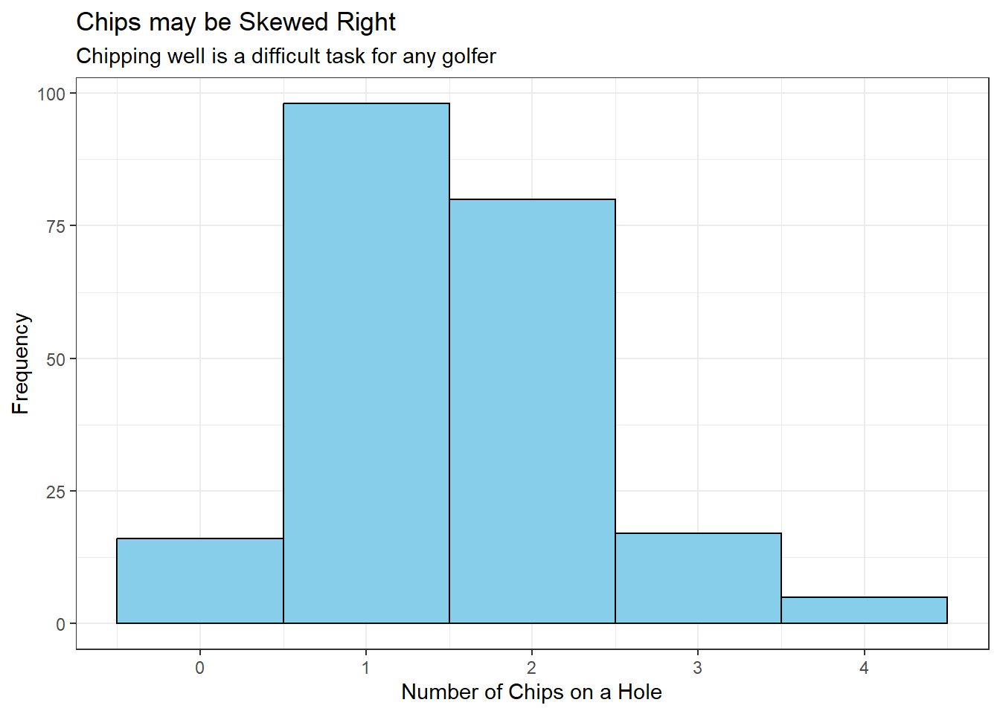
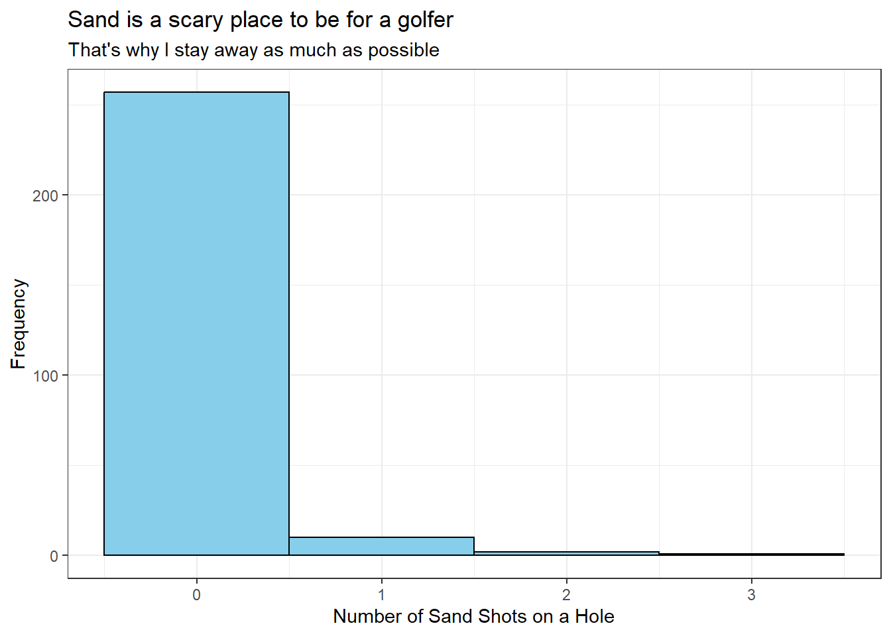

Code
golfdf <- golfdf %>%
arrange(Date)
datatable(golfdf)I’m an avid golfer. I love the sport and I’ve been playing casually since my childhood. As of recent, I’ve decided I want to get better at the sport. I hope to get to the point where I can break 80.
When deciding what to do my analysis on, I realized that I’ve been keeping a accurate and consistent set of data on my golf game. I started using an app, 18birdies, and it’s capable of tracking information about my scores, chips, putts, etc. I hand-copied the data from my app to a csv, and I’ll be analyzing it with the hope of answering these two questions.
I hope to answer these two questions to see if my practice has truly made an impact on my scores, and to see what part of my game needs the most practice. I believe this will help me to lower my score.
Here’s the actual data that I collected (don’t judge me for not being the best golfer).
golfdf <- golfdf %>%
arrange(Date)
datatable(golfdf)It’s in a tidy format where each observation is a hole played. There are NA’s in the Fairway Hit for the par 3 holes. I’ve only played rounds at 3 different golf courses this year, with the vast majority of them being the Rexburg Municipal course. This is because my friend has the “buddy pass” and so he can take me on for free.
The data is for every game of golf I’ve played this year. On a few dates I played the Municipal twice, and figured it most appropriate to count it as a single game of 18 holes, although in reality the course is only a 9 hole course. I also played Teton Lakes, which has 3 forks of 9, and I played the combination of the North and South fork, so I labeled it accordingly in the course name.
This is something that I’m truly hoping is happening. I want to be getting better at golf as I play more golf. I think one good way to look at this is by checking how much over par I have been, by game, over time. There’s likely a cool graph I can make of this.
gdf1 <- golfdf %>%
group_by(Date, Course) %>%
summarise(
total_score = sum(Score),
total_par = sum(Par),
num_holes = n()
) %>%
mutate(
to_par = total_score - total_par,
simulated_to_par = if_else(num_holes == 9, to_par * 2, to_par),
simulated_score = if_else(num_holes == 9, total_score * 2, total_score),
Date = mdy(Date)
) %>%
arrange(Date)First, I create an aggregation of the data that takes observations on the same date and on the same course, and gets me a sum of that observation’s par, score, and hole count data. I then create a column, to par, that is the course par subtracted from my course score, but if the number of holes played was only 9, it’s doubled. This gets me an aggregation of filtered data that shows me my score to par over actual 18 holes, or simulated 18 holes.
Lastly, I also changed the date column into a date type instead of a string type. This will allow me to plot my scores over time.
ggplot(gdf1, aes(x = Date, y = simulated_to_par)) +
geom_line() +
geom_point(aes(color = as.factor(num_holes)), size = 2.5) +
#geom_smooth(se = F) +
labs(
title = "Score to Par in 2026",
subtitle = "9-Hole rounds doubled score to simulate 18 round game",
y = "Score to Par",
color = "Holes Played"
) +
geom_hline(yintercept = 23.90476, linetype = "dashed", color = "gray50") +
annotate(
"text",
x = mdy("5/30/2026"),
y = 25,
label = "Mean"
) +
theme_bw()
This graph is pretty interesting as it has data all the way up to day of submission, 6/6/2026.
It seems like since 5/23/26, I’ve only golfed over my total mean to par for 2026 ONCE. If we separate the data on 5/23/26, my mean score before is 27.36, and after is 17. I believe that’s a drastic improvement, and although I started the season very inconsistent, I believe this graph reveals I am truly becoming a better golfer.
So to answer the first question, yes, I am getting better at golf.
I think a good way to address this question is to make some histograms.
ggplot(golfdf, aes(x = Putts)) +
geom_histogram(binwidth = 1, fill = "skyblue", color = "black") +
labs(
title = "Normal Distribution of Putts?",
subtitle = "Eliminating 3-Putts is vital to improving the scorecard",
x = "Number of Putts on a Hole",
y = "Frequency"
) +
theme_bw()
This first histogram reveals to me that I am frequenting the land of 1 or 2 putts much more often than I’m frequenting the land of 3 putts of over. This is a very good thing for my golf game, as eliminating 3-putts is one of the best ways to ensure I keep my scorecard from blowing up. One thing that I did notice is that I’ve still had over 30 holes where I hit a 3-putt. This might be the deciding factor in what I should improve on.
ggplot(golfdf, aes(x = Chips)) +
geom_histogram(binwidth = 1, fill = "skyblue", color = "black") +
labs(
title = "Chips may be Skewed Right",
subtitle = "Chipping well is a difficult task for any golfer",
x = "Number of Chips on a Hole",
y = "Frequency"
) +
theme_bw()
This graph is also very revealing, although it may be for the worse. Although I am getting a majority of my holes in the 1-chip range, I have a concerning number of holes that are 2 or more chips. Ideally, I should be eliminating the 2-chip holes. Anything over 2 chips should be outright gone from my game if I want to improve. With over 70 holes that I’ve hit 2-chips on, this might be the weaker part of my game.
ggplot(golfdf, aes(x = Sand)) +
geom_histogram(binwidth = 1, fill = "skyblue", color = "black") +
labs(
title = "Sand is a scary place to be for a golfer",
subtitle = "That's why I stay away as much as possible",
x = "Number of Sand Shots on a Hole",
y = "Frequency"
) +
theme_bw()
This last histogram shows a strong tendency in my golf game. I like to stay out of the sand. I have ~20 or so holes out of 200 that I ever went into the sand on, and about half of them I got out within 1 hit. This is a rather comforting fact. 9 times out of 10, I’m going to miss the sand. During those rare times I end up in the sand, I get out in 1 shot 50% of the time.
So, in conclusion, I think that chipping is the weakest part of my golf game. Ideally, I want to spend a larger majority of my time under 2 chips. I also want to make 2 chips a “cap” to my golf game, eliminating the possibility of 3-chipping from my game. I believe if I did this, I’d set myself up for a lot more success.